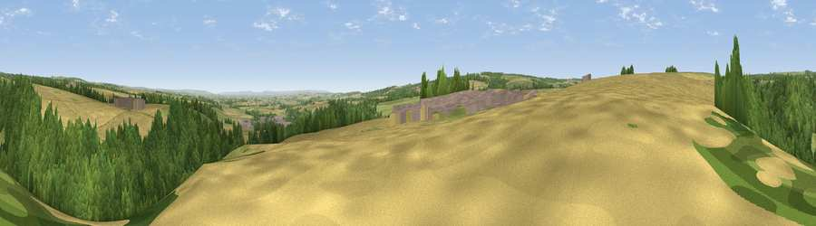

Viewpoint near Helmsley
#19266 in England · top 45% of its area beats it · near HelmsleyThe view, rendered

A 360° render of this exact spot computed from the terrain model, tree cover and land cover — summer colours, afternoon light, calibrated against photographs of famous viewpoints. Real trees, hedges and buildings will differ in detail.
The panorama
Grey silhouette: terrain skyline in each direction (720 bearings, Earth curvature and refraction included). Dashed green: skyline with trees (+15 m) and buildings (+8 m) as obstacles. Blue strip: how far the ground is visible on each bearing.
Where the view opens
Wedge length = distance to the farthest visible ground on that bearing (vegetation-aware). Rings at 10, 25 and 50 km.
What fills the view
53% woodland · 31% cropland · 15% grassland · 1% built-up
Angular shares of the visible panorama (visual magnitude), not map area. Landscape diversity 0.45 (0–1 Shannon).
Key numbers
More beautiful places nearby
The staircase of upgrades: each row has a higher view potential than everything closer. Driving times are estimates from straight-line distance, calibrated against real road routing — check an actual route before setting out.
| Place | Direction | Drive | Score |
|---|---|---|---|
| Viewpoint near Sproxton | SSW · 3 km | ~7 min | 56.5 |
| Viewpoint near Carlton | NNE · 5 km | ~12 min | 57.9 |
| Viewpoint near Ampleforth | S · 6 km | ~12 min | 74.3 |
| Viewpoint near Ampleforth | SSW · 6 km | ~12 min | 74.9 |
| Viewpoint near Ampleforth | S · 6 km | ~12 min | 76.6 |
| Viewpoint near Thirlby | W · 9 km | ~18 min | 81.5 |
| White Hill | N · 19 km | ~33 min | 84.2 |
| Viewpoint near Great Broughton | N · 19 km | ~33 min | 84.4 |
54.25516, -1.08245 · source: screening · position refined by local search. Computed location — check access rights before visiting.